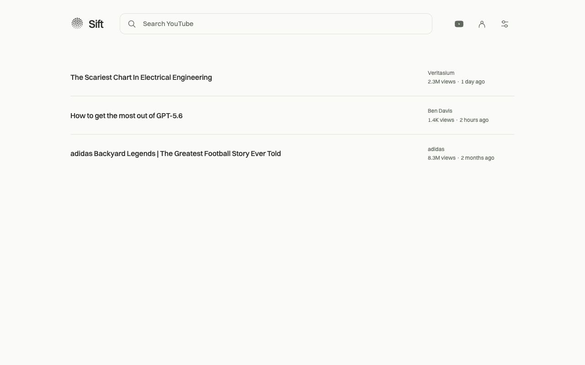

Find something good.
Leave the noise behind.
A calm, text-first YouTube.
Add to ChromeFree to install.

Less to pull you in.
A text-first feed, with thumbnails when you want them. Keep Shorts, comments, and autoplay out of the way.
The gist, before you watch.
Enable AI answers for automatic summaries when you hover or focus a video. Ask follow-up questions in chat.
Your next click is yours.
Search for what interests you and play when you choose. Sift keeps the rest of the web as it is.
A little more understanding.
Optional AI answers, built into Sift.
Free
50 requests each month
Summarize videos and ask follow-up questions with the best suitable free model currently available through OpenRouter.
Sift Premium
US$8.99 per month
Unlimited chats with the Premium model. Stripe confirms your local price at checkout. Cancel any time from Sift Settings. Ordinary rate limits and abuse prevention apply.